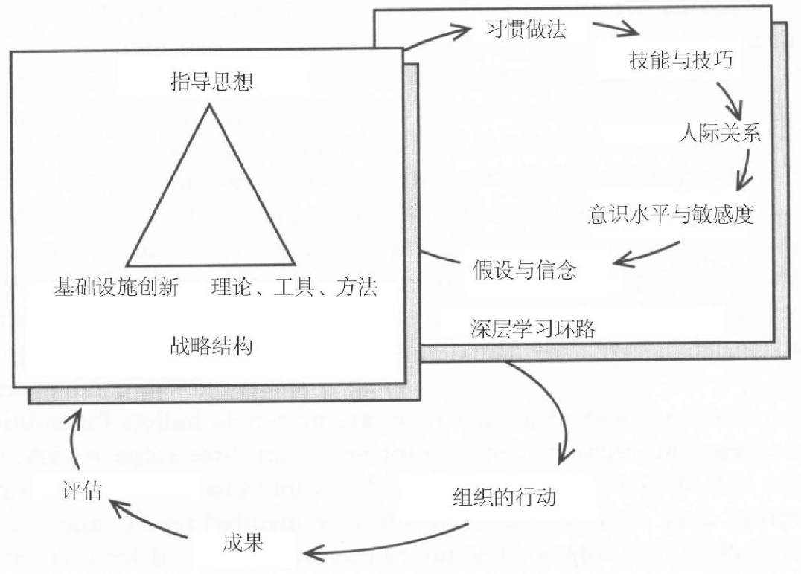

战略思考与8种应用策略¶

深层学习环路¶
- 假设与信念
- 习惯做法
- 技巧与能力
- 关系网络
- 意识水平与敏感度
介入深层学习环路的策略¶
策略一般包括三个要素：
- 指导思想
- 主导性的理念和原则，界定组织存在的目的、大家追求什么成就，组织要如何运行——志向、愿景，价值体系
- 理论、工具、方法
- 具体明确的工作方式，及应用这些理论的实际措施，用来解决问题、调解分歧和检测进度
- 基础设施创新
策略1 学习与工作的结合¶
反思之所以在商业界备受责难，是因为我们缺少把反思和行动结合起来的修炼方法。大家说没时间在那儿闲聊，这也对。但是，我们也经常没时间思考。……在现实中，复杂的挑战要求使用不同的方法：它必须使我们能够探寻深层的，而且往往是隐蔽的意义，使背后的假设浮出水面，并把整个系统的各个部分联系起来，只有这样，我们才能理解实际情况，才能达成共识，进而采取行动。
反思不与行动联系，就使大家觉得这是浪费时间。
反思意味着我们能听到各种声音，而不是必须满足每个人的需要。
当形势进展与我们的预想不符时，我们就会马上进入要解决问题的反应式心态——而不是放慢脚步，花时间来看清楚，这与预想不一致的事态，是否揭示着有关我们的假设的重要信息。
行动后反思最简单的做法就是问三个问题¶
- 实际发生的情况是什么？
- 我们曾期望发生的是什么？
- 从这两者的差距中我们能学到什么？
策略2 从现有条件和人力出发¶
当大家认为，没有最高层的支持就什么都无法进行时，就会出现与支离破碎的倾向密切相关的问题。人们很容易认为，深层学习的战略构架只和最高管理层有关。但实际上，战略思考对所有各级的领导而言，都是必须的。
聚焦在大家都认为不可能解决的问题上。
而只有当你能够激发大家的才能和深层愿望时，才可能应对那些“不可能的事”。
策略3 学会双向交流的文化能力¶
激情是创新者行动的动力，没有这种激情，创新者不会冒着风险去尝试全新的东西，也不会有成功创新所需要的耐心和韧性，更不会吸引其他志同道合的人来分享这种激情。但激情同样会使他们盲目，无视圈子外的人究竟如何看他们，还使他们无视自己给他人带来的影响。
产生重大业绩飞跃的基础创新，对习惯常规惯例运作的团队和个人，都是一种威胁。尤其当这种创新成就是靠非同寻常的方法实现、别人对这些方法又所知甚少时，它所带来的威胁就更大。
创新者要面对两个世界：一个是自己推动建设的团队或组织的开放性、学习型世界；一个是在组织机构中占据主流的、更传统的世界。要保持创新势头，就要求领导者学会双向交流文化能力，即能够在两个不同的世界之间有效地来回转换，并遵守每个世界的基本运行规则。
低调地进行创新¶
去创新，但不能制造危险报警信号。你的策略必须在文化和语言上经过缜密设计，尽量用高层能听懂的语言，来描述我们努力实现的变革。
使用掌权者的语言¶
你必须使用掌权者的语言，这意味着，必须非常清醒地意识到正式的组织权力分配和使用情况。
努力对高管层保持完全的透明度，达成明确的协议。
少许诺，多兑现。
策略4 建立演练场¶
没有演练就没有学习，没有一个运动队可以不需练习，就直接参加比赛，还能指望获得成功。
建立演练场，安排经常性的定期演练，是一项重要策略。
策略5 与核心业务联系起来¶
成功的学习实践者要想产生大规模的影响力，就要学会如何与组织的核心业务联系起来，并且是在最深层的个人和集体的身份认同感方面联系起来。
没有固定的可行方法来把组织的核心身份认同感，与其历史上从未有过的新事物联系起来。但是，开始的方法，是确信这种认同感是存在的，即确信组织不只是为了赚钱而存在，也不只是为了提供现有的产品和服务而存在。这要求一种真正的探索精神，愿意让自己的内心来引导自己；还要求有心理准备，去发现本来固有的，但从未显现出来的东西。
要成为变革领袖的人，常常由于无法辨别前进道路上的两个微妙的障碍，而受到限制：他们未能足够地深入自我，发现自己的真正的心灵召唤；同时，他们未能足够地深入组织中，发现它究竟代表什么。如果不能足够地深入自我，我们就只会追随“好理念”，却不能激发自己的激情。如果不能足够地深入组织所代表的内涵，我们会试图把自己的理念“推进”组织中去。
策略6 建设学习型社区¶
当我们自己的深层问题和愿望，与组织的内在本质联系在一起的时候，社区就得到了形成和发展。
用“世界咖啡馆”的方法，我们可以把大型会议变成真正的深度汇谈。创造深层交谈的空间，学习型社区就是自然发生的副产品。重要的一点是，要有意识地创造和维护这种“社会空间”。另外还要认识到，学习型社区的创建是一个自然的过程，不需要控制或操纵——实际上，试图去控制它，会很容易产生事与愿违的结果。
策略7 与“对手”协作¶
包容多样性，通过合作伙伴来增加观点和视角的多样性，是战略变革的关键杠杆之一。
策略8 开发学习型基础设施¶
只阐述新指导思想，而没有配合资源调配，是不合情理的。同样，引进新工具和方法，而没留什么机会去应用，也不会有帮助。
如果要让学习实践产生实际的效果，它就必须与组织运作的机制有深层的耦合。
学习型基础设施不被广泛重视的真正原因，是大多数经理人仍然只有短期业绩的狭隘视野，不肯为未来的成功而建设容量能力。
创造现实而非贴标签¶
当你有关爱心、去服务，并通过聆听和关注社区里的所有人，包括孩子和老人，来实现领导力时，你不必非给它冠什么名。那里的文化会发生改变，你只需要深入到群众中去，那就是大家需要的。
我们怎样谈论自己的工作，虽然很要紧、但事情的关键还在于我们自己的反思过程、实验经历和开放历程，而不在于我们使用什么词汇。重要的是我们创造的现实，而不是我们给现实贴上的标签。